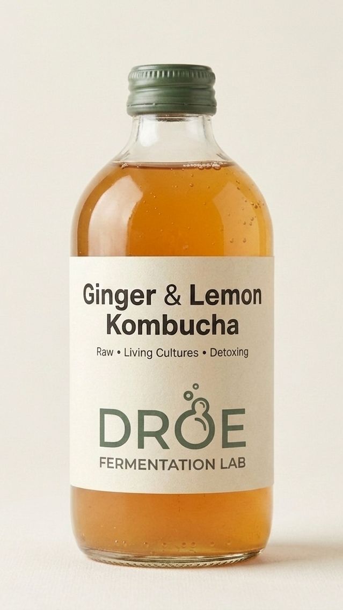

Kombucha Refined.
By Science & Art.
Raw, living, and small-batch fermented by Brewing Technician & Sous-Chef Oswald Diaz.
Signature Ferment
The Gold Standard: Our Kombucha
Crafted with a chef’s palate and a technician’s precision. Our Kombucha is a living elixir designed to balance your gut and delight your senses.
- Chef-Grade Flavor: Sophisticated, balanced, and crisp.
- Probiotic Power: Cultivated for maximum digestive health.
- 100% Raw: Never pasteurized, always alive.
